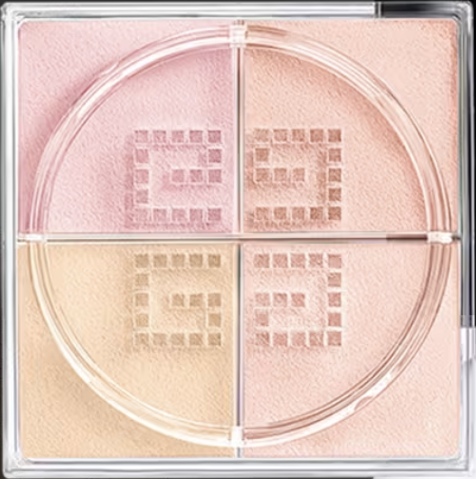
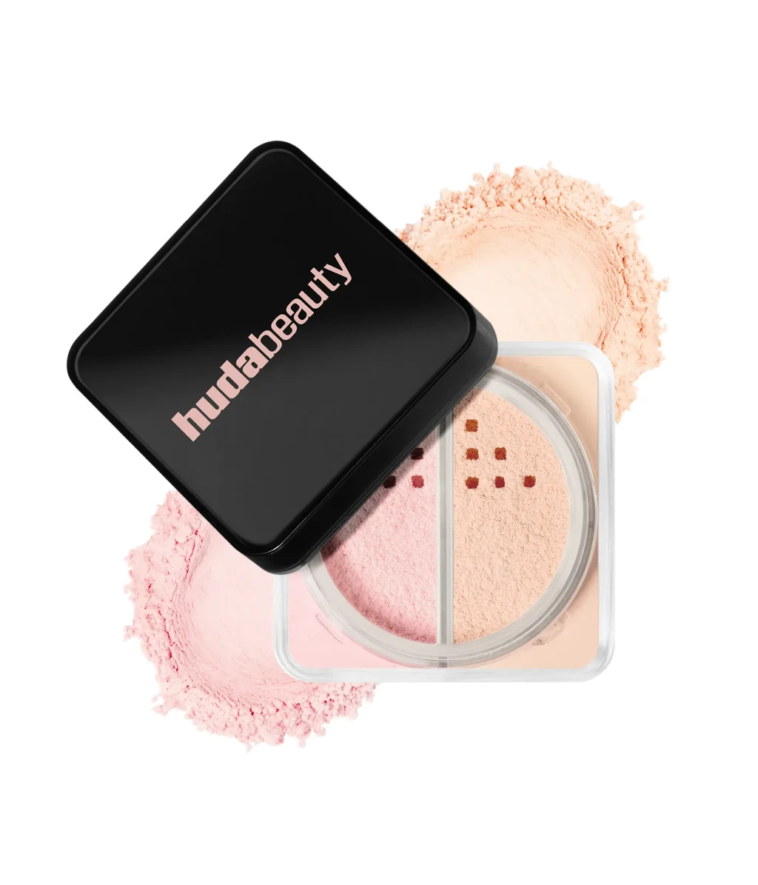
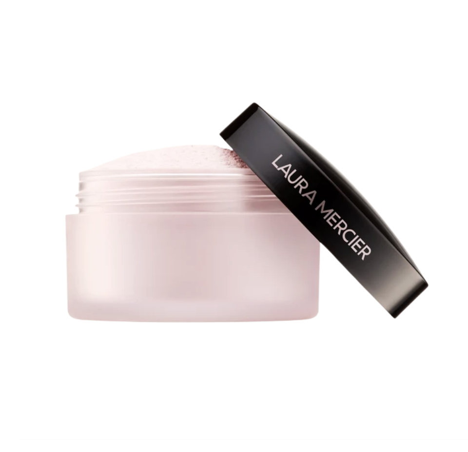
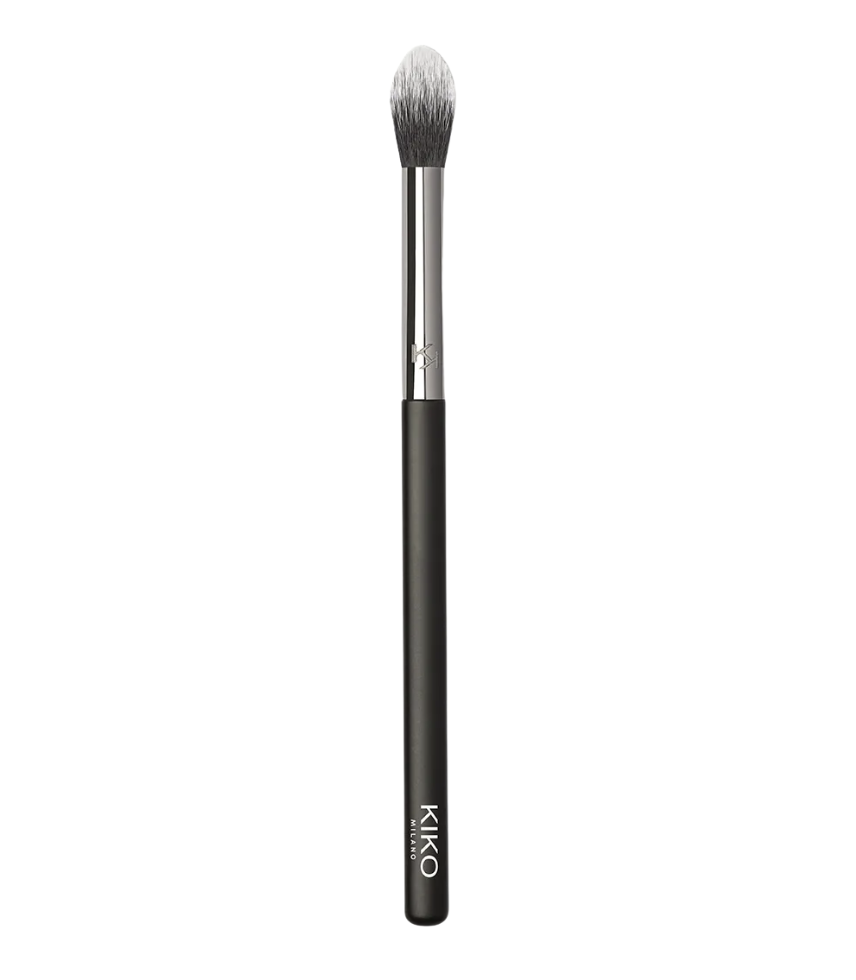

Givenchy
Prisme Libre 4-Color Loose Powder
N°03 · Voile Rosé
Pó solto de quatro cores para um acabamento suave, equilibrado e luminoso.
Onde aplicar
Testa, maçãs, nariz e queixo.
Pós soltos para selar a pele com leveza, preservar a textura natural e manter o acabamento no lugar.

Pó solto de quatro cores para um acabamento suave, equilibrado e luminoso.
Testa, maçãs, nariz e queixo.

Pó solto em duo para fixar a maquiagem e uniformizar o centro do rosto.
Testa, maçãs, nariz e queixo.

Pó solto iluminador e corretivo para um olhar mais fresco e suavemente neutralizado.
Abaixo dos olhos e também nas pálpebras superiores.

Kiko MilanoEyes 66 Pointed Blending Brush